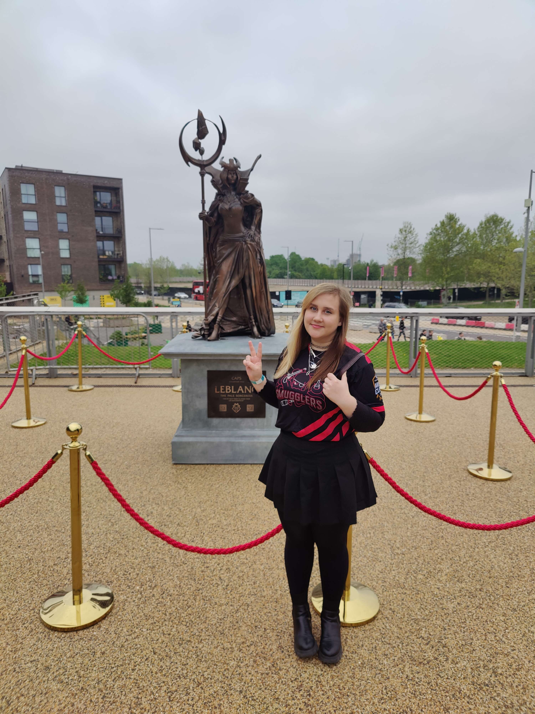

Business Development, Events, and Media
Through a variety of academic, business, and pastoral roles, I have been fortunate enough to gain a well-rounded, dynamic, and forward-thinking view into what makes a valuable and successful business. Responsibility is a feature I have always excelled in managing, and paired with my reliability, I have been trusted to take initiative and leadership in both professional and personal environments. I strive to become an asset to any new team, both socially and professionally, and pride myself on my problem-solving and flexibility. After graduating from the University of Bristol with a degree in Mathematics and Philosophy, I am now applying my skills in logical reasoning, data analysis, and communication, to pursue a career in Business Development, Events, and Media.
My passion for both business development and the games industry has seen me take on voluntary roles as ‘Business Operations Director’ for a small Esports organisation based in the UK, as well as spending my spare time moderating Discord servers and helping out with the logistics and casting of small scale Esports tournaments.
I also have an interest in computing and technology, building my own PC, which I use for gaming, design, and streaming, as well as recently teaching myself to code.
From 2015 to 2018, I was appointed president of the Bristol Donors Society at the University of Bristol, helping to raise awareness of the importance of donating blood as well as recruiting and supporting first-time donors.
Business Development Executive / Bristol SU
January 2020 - Present, Bristol, UK
I am currently working as a Business Development Executive within the Events and Business Development Team at the University of Bristol Students’ Union. Here I am responsible for liaising with a variety of large businesses to organise brand activations, digital marketing, and client contracts as a primary account manager. I also work with SMEs across the city, providing support and advice on how to engage the 26,000 students currently studying at the University.
This year my team organised two of the biggest events of my portfolio - the University of Bristol Official Welcome Fair in October 2020 and the Refreshers Fair in January 2021. In the period leading up to these 8,000+ attendee digital events, I created B2B marketing campaigns, produced an extensive media pack, and onboarded over 55 commercial partners.
Showroom Assistant / Tom Howley Ltd
July 2018 - Present, Bristol UK
I am currently acting as a part-time showroom and sales assistant at the Tom Howley Bristol showroom, a leading bespoke kitchen designer. Here I am responsible for converting leads and generating sales, greeting and dealing with customer requests, as well as organizing meetings for designers. I have enjoyed the challenge of working within a new sector of industry and demonstrating my sales performance, impeccable customer service, and organisational skills.
Senior Resident / University of Bristol
September 2017 - September 2019, Bristol UK
Acting as a Senior Resident for the University of Bristol, I was responsible for ensuring the pastoral care and wellbeing of incoming first-year students moving into halls of residence. Although challenging in nature, I thoroughly enjoyed taking on this responsibility and it enabled me to develop several new skills while pushing myself to be a well rounded, professional, and supportive individual. I was responsible for administration, support, and daily operation of the halls of residence, as well as organising events and providing pastoral talks to large numbers of students.
University of Bristol / Mathematics and Philosophy BSc Hons (2:1)
September 2014 - July 2018, UK
Coleg Cambria / A-Level Mathematics (A), A-Level Further Mathematics (A), A-Level English (B)
September 2011 - July 2014, Wrexham, UK
Full Clean UK Driving License
July 2013 - Present
Proficient in the use of:
- CRM and Management Software (Mailchimp, Typeform, Airtable)
- Graphic Design (Canva, ArtRage, Photoshop, InDesign)
- Office Applications (Outlook, Teams, Excel, Powerpoint, Word)
- Streaming Applications and Services (Twitch, OBS, Streamlabs)
Familiar with:
- Web Design (HTML, Markdown)
- CRM Software (Integromat, SalesForce)